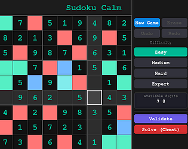

Sudoku Calm
Classic Sudoku with a twist: every empty cell is colored by how many numbers could still go in it.
Try it: click any cell. Its row and column light up, and matching numbers turn gold.
What this is
Sudoku Calm is a single-file Sudoku game written in Python with pygame. It runs on your desktop, and it also runs in a web browser through pygbag, which is how the itch.io version is built.
The whole game is one file, sudoku_calm.py: puzzle generator, solver, game logic and interface.
What it looks like

Clue numbers are teal and your own numbers are white. The board is on the left and every control is in the sidebar on the right.
Empty cells are tinted by the heat map. In the screenshot, the red cells have only one possible number left, so they are good places to start.
Features
Four difficulty levels
Easy, Medium, Hard and Expert, from 30 to 64 cells removed.
Unique solutions
Every puzzle has exactly one solution. The generator checks this each time it removes a number.
Heat map
Empty cells are colored by how many digits could still fit. Red means one option, so you know where to look.
Logic assistant
Select a cell and the sidebar lists the digits that can still go there.
Highlights
The selected cell's row and column are highlighted, and every cell with the same number glows gold.
Instant conflict warning
An illegal number turns red as soon as you type it, with a notice in the sidebar.
Validate and solve
Validate marks wrong answers in red. Solve (Cheat) fills in the whole solution in yellow.
Undo and redo
Step back and forward through your moves with the keyboard or the sidebar buttons.
Controls
| Action | How |
|---|---|
| Select a cell | Click it, or use the arrow keys |
| Enter a number | 1–9 on the top row or the numpad |
| Clear a cell | Backspace, Delete, numpad 0, or the Erase button |
| Undo | Ctrl + Z |
| Redo | Ctrl + Y |
Run it yourself
You need Python 3 and pygame.
pip install pygame
python3 sudoku_calm.pyTo build the web version for itch.io:
pip install pygbag
pygbag sudoku_calm.pyThen zip the build/web folder and upload it as an HTML project.
How it works
Generating a puzzle. A backtracking solver fills an empty board with a random complete solution. Then it removes cells in random order. After each removal it counts the solutions, and it puts the number back if the puzzle would stop having exactly one.
The heat map. For each empty cell the game collects the numbers already used in its row, column and 3×3 box. Whatever is left is the set of possible digits, and the size of that set picks the color. Results are cached and only the affected row, column and box are recalculated after each move.
Running in the browser. The main loop is async and yields to the browser every frame, as pygbag requires. Puzzle generation happens right after a loading screen is drawn, so the page never looks frozen.